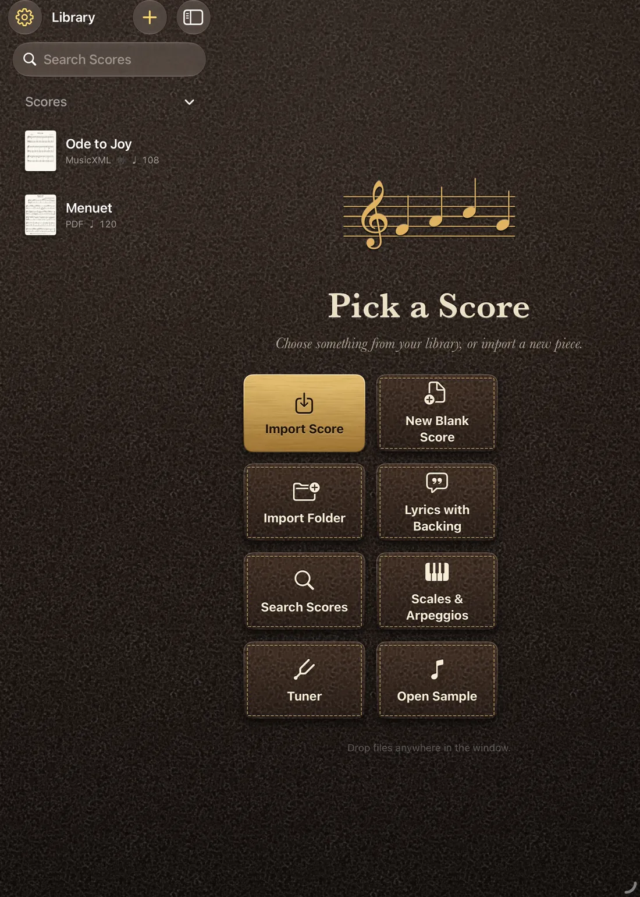

For Education.
A practice partner for every student. A time-saver for every tutor.
Maestro Pro puts each player's own part on their own iPad or Mac, plays along at any speed and in any key, and listens to them play. For music schools, music services, colleges and private tutors.
Better practice, between lessons.
A student with a lesson a week plays alone for the other six days. Maestro Pro gives that time a patient partner: it plays the rest of the music, waits when they stumble, and tells them afterwards where the notes went wrong.
- Practise at your own paceSlow a passage down without changing the pitch, loop the hard bars, count in, switch on a metronome. Speed it up again when it is ready.Read more →
- Play alongPlay with a backing track, a song from Apple Music, the built-in instrument or just a metronome, in the right key for your instrument.Read more →
- Be listened toWait for Me holds the score until the right note is played in tune. A tuner and a steady-note trainer sit alongside it.Read more →
- Hear yourself backRecord a take against the score. The review shows wrong notes, late entries and the bars that need work, in plain words.Read more →
- Your instrument, your keyTranspose for B♭, E♭ or F instruments. Scales and arpeggios are made on demand, in any key, ready for the next grade.Read more →
- Mark it upAnnotate with Apple Pencil like a paper part. The ink stays with the score and prints in exported PDFs.Read more →
- Made to be readableLarger text, high contrast, reduced motion and your own colours, so more students can use it comfortably.Read more →
Less preparation, more teaching.
Most of a tutor's evenings go on finding, fixing and printing music for different instruments. Maestro Pro turns that into minutes and keeps a rehearsal together once it starts.
- Everyone in timeLink up to eight devices. Play, pause and seek on one and all of them follow, each student on their own part, key and instrument.Read more →
- Parts without the waitWrite a part, fix a note, transpose for each instrument, build a medley. The editor looks after beams, ties and bar lengths.Read more →
- Keep every arrangementEach save is a version. Keep one branch per ensemble, merge ideas back, spin a version off as a score for one student, and push the history to your own GitHub repository.Read more →
- Hand it outSend a score and its backing track as one file by AirDrop, Messages or Files. Export MusicXML or PDF, or print.Read more →
- Plan the lessonSet-lists for a lesson, a rehearsal or a concert. Import PDF, MusicXML, MIDI and karaoke files, or search for free scores.Read more →
- Teach on the pageDraw on the score while you explain it, and turn a score into a video of the music following along.Read more →
- Choirs and singersLyrics scroll in time, duets get a singer each in their own colour, and karaoke files show their words.Read more →
Nothing to sign up for.
There are no student accounts and no adverts, and Maestro Pro does not collect personal data. It counts which features are used with anonymous, privacy-friendly analytics (see the privacy page). Scores, recordings and drawings stay on the device, or in the user's own iCloud if they switch it on. Microphone audio is analysed on the device.
That keeps a data protection review short. Check the details against your own school's policy and read the privacy page.

Buying for a whole school.
Apple lets schools and organisations buy apps in bulk and hand them out to their own devices and people. Here is how that works, and where Maestro Pro's plans fit.
- What it is
- Volume purchasing through Apps and Books in Apple's management portals. The organisation gets licences in the quantity it needs and owns them, rather than every student downloading a copy on a personal account.
- Who it is for
- Apple School Manager is for schools, colleges, universities and local authority or music-service teams. Free to enrol.
- Apple Business Manager is for other organisations, such as a private music academy or tuition company. Free to enrol.
- Both need the organisation to be verified by Apple. Your IT lead or administrator usually does this once.
- How it works
- An administrator signs in to the portal, finds the app in Apps and Books, and chooses how many licences to get.
- Licences are assigned to devices, so students need no Apple Account at all, or to people with Managed Apple Accounts.
- The app is installed through your mobile device management (MDM) service, such as Jamf, Mosyle or Microsoft Intune, or from the App Store by the person it is assigned to.
- When a student leaves or a device is replaced, the licence is taken back and given to someone else. It is not lost.
- Where Maestro Pro fits
- The free version, which opens sheet music and lyrics files, can be rolled out to every device this way. Performer and Professional are subscriptions. Apple's volume purchasing covers apps rather than subscriptions, so each person who needs a paid plan subscribes on their own Apple Account, and starts with the free week. Apple's terms can change, so check their pages below.
- Which plan
- Free for a student who only needs to read their part.
- Performer (£10 a month) for students who practise with the full set of tools.
- Professional (£15 a month) for tutors who write and arrange parts. Both are cheaper by the year.
- Availability
- Volume purchasing is not offered in every country or region. Check Apple's pages for yours: Apple School Manager and Apple Business Manager.
This page describes Apple's scheme as it stands, for guidance only. Apple's own pages have the current terms.
Try it with a class.
Maestro Pro is coming to TestFlight before the App Store. Register your interest in the beta: every feature is free while you test.